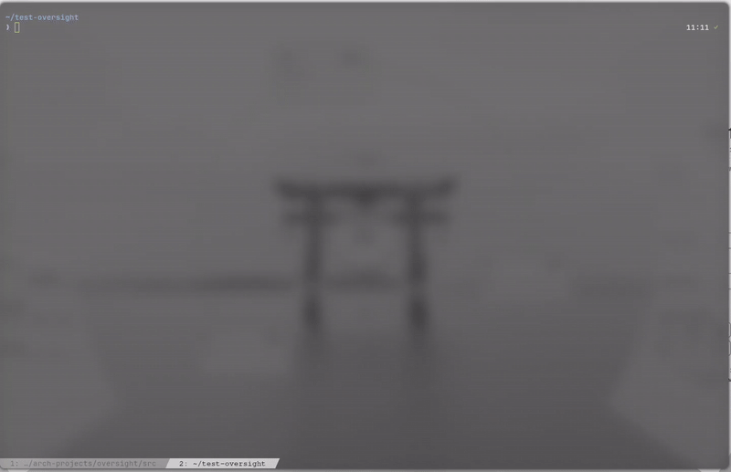
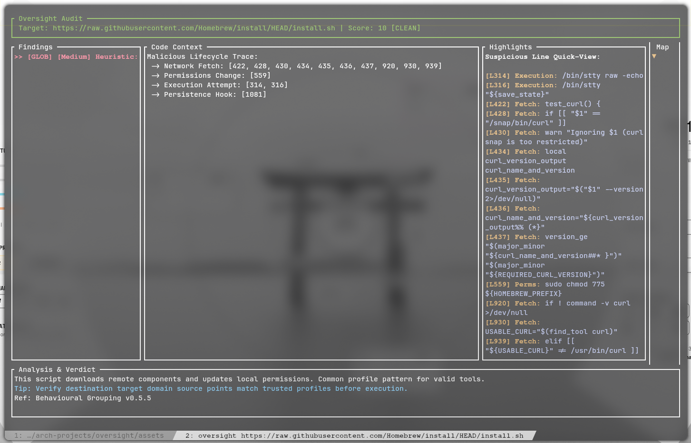

Oversight Documentation
Oversight is a high-speed terminal security intelligence engine designed to audit shell scripts, command buffers, and package diff streams before they execute on your system. It acts as an active safety layer between automated installation routines and manual code verification.

Quick Start
Get up and running in seconds with standard Arch Linux packaging or automated source installation:
1. Install via AUR
yay -S oversight-git2. Audit Any Target
# Audit a local shell script
oversight ./install.sh
# Audit a remote installer safely in memory
oversight https://raw.githubusercontent.com/example/repo/main/install.sh
# Pipe standard input directly into the auditor
git diff | oversightInstallation Guide
Oversight is compiled in Rust with minimal dependencies for maximum binary isolation.
Native Dependencies
- Rust & Cargo: Rust 1.80+ (Edition 2024 recommended).
- OpenSSL: System library for secure TLS/SSL network queries.
Option 1: Arch User Repository (AUR)
# Using Yay
yay -S oversight-git
# Using Paru
paru -S oversight-git
# Manual PKGBUILD build
git clone https://aur.archlinux.org/oversight-git.git
cd oversight-git
makepkg -siOption 2: Automated Installer from Source
git clone https://github.com/Rakosn1cek/oversight.git
cd oversight
chmod +x install.sh
./install.shThe installer compiles the binary, installs it to ~/.local/bin/oversight, copies security signatures to ~/.local/share/oversight/rules.json, and adds preexec shell hooks to your profile.
File Locations
| Component | Path | Purpose |
|---|---|---|
| Engine Binary | ~/.local/bin/oversight |
Main executable |
| Signature Database | ~/.local/share/oversight/rules.json |
Security rules and patterns |
| Shell Hooks | ~/.local/share/oversight/oversight.[zsh|bash|fish] |
Command interception wrappers |
Feature Breakdown
Dynamic Multi-Stream Tab Layout
During batch package upgrades, Oversight dynamically scans incoming unified git patch streams. It separates combined diffs into isolated tabs for each package, pulling in local build assets like PKGBUILD, .install scripts, and patches.
Shannon Entropy Obfuscation Scanner
Calculates string entropy across clean script tokens. High-entropy blocks trigger alerts for packed binaries, encoded base64 blobs, and encrypted shellcode that traditional regex tools miss.
Security Heat Map Sidebar
A real-time vertical minimap on the right flank plots threat coordinates across the file. It includes a responsive cyan scroll thumb indicator (█) to orient the user within long documents.
Vulnerability Intelligence via OSV.dev
When package installer invocations are detected, Oversight queries the Open Source Vulnerabilities (OSV) database in real time to alert you to known CVEs before the installation command executes.
Clean Stream Pager Fallback
When audited text passes with zero risk flags, Oversight automatically acts as an interactive text pager. Paged content wraps smoothly and supports line-by-line scrolling and full-page stepping.

Behavioural Assessment Models
Oversight links individual script events across execution lifecycles to detect sophisticated malware chains:
- Malicious Lifecycle Sequence: Detects the classic trojan pattern combining remote fetch (
curl/wget), permissions modification (chmod +x), and immediate execution. - Build-Time Dependency Injection: Flags secondary installer commands (
npm install,yarn add,bun install) running inside package build profiles. - Anti-Forensics & Stealth: Monitors self-deletion attempts (
rm $0), silent standard error redirection (> /dev/null), and RAM-only paths (/dev/shm). - Persistence Hooks: Flags unexpected modifications to
crontab, shell runcom files (.bashrc,.zshrc), or systemd unit definitions. - AUR Orphan Status: Detects unmaintained packages lacking an active AUR maintainer, preventing adoption of hijacked components.
Rules Engine & Custom Signatures
Security rules reside in rules.json. You can customise or extend detection patterns without touching the Rust source code:
{
"name": "Destructive File Removal",
"category": "System Integrity",
"pattern": "\\brm\\s+-[rfv]*[rf][rfv]*\\s+/(?:etc|bin|usr|var|home|root)?",
"severity": "Critical",
"explanation": "Detects attempts to recursively delete critical system directories.",
"reference": "MITRE ATT&CK T1485",
"fix": "Verify that target directories are scoped locally and never reference root paths."
}Severity categories range from Low (informational) to Medium, High, and Critical, feeding into the weighted 0 to 100 risk score.
Shell Interception & Live Protection
Oversight includes non-invasive shell wrappers for Zsh, Bash, and Fish. When an interactive command matches high-risk patterns (such as piped web installers), an interactive menu prompts you to analyse the command before execution.
# Shell hook evaluation pattern
((curl|wget).*https?://[^ ]+|rm +-rf +/)AUR Helper & Pager Integration
To integrate Oversight directly into your package upgrade workflow, configure your helper as described below:
Option A: Dedicated AUR Helper Setup (Targeted)
For Yay
Append the following alias to ~/.zshrc or ~/.bashrc:
alias yay="yay --diffpager oversight"For Paru
Add the following block to ~/.config/paru/paru.conf:
[options]
Pager = oversight
CombinedUpgradeFor Other Helpers (e.g. Shelly)
Set the helper variable so Oversight locates correct cache paths:
export AUDIT_HELPER="shelly"Option B: Universal System Pager Setup
To use Oversight for all terminal paging operations including manual pages and git diffs, add these exports to your shell profile:
export PAGER="oversight"
export MANPAGER="oversight"Pager Stream Semantics
When used as a system pager, Oversight adapts dynamically depending on the input stream:
- Clean Manual Pages: Commands like
man pacmanparse cleanly with zero security flags. Oversight renders the document inside the viewport with full keyboard and mouse scroll navigation. - Official Mirror Upgrades: Standard repository mirror updates lack Git patch headers. Oversight automatically falls back to flat text buffer mode, displaying a single clean audit verdict.
- Piped Shell Streams: When piped via standard input, shell wrappers pass streams directly through to the binary without requiring command arguments.
Keyboard & Controls Reference
| Key / Input | Context | Action |
|---|---|---|
| ↓ / ↑ | Pager Mode / Tabs | Scroll viewport line by line |
| ↓ / ↑ | Findings View | Navigate between security findings |
| j / k | All Views | Scroll viewport line by line |
| PageDown / Space | All Views | Scroll viewport down by one page |
| PageUp / b | All Views | Scroll viewport up by one page |
| d / Ctrl+d | All Views | Scroll viewport down by half page |
| u / Ctrl+u | All Views | Scroll viewport up by half page |
| Home / g / ← | All Views | Jump to top of stream |
| End / G | All Views | Jump to bottom of stream |
| Tab | Multi-Package | Cycle through package tabs |
| 0 to 9 | Multi-Package | Jump directly to tab index |
| s | Findings View | Toggle suppression of selected finding |
| Mouse Wheel | All Views | Scroll viewport smoothly by 3 lines |
| q / Esc | All Views | Exit interface |
Security Advisory & Limitations
Community & Contributions
Contributions, rule submissions, and feedback are welcome:
- GitHub Repository: Rakosn1cek/oversight
- Discord Community: Join Rakosn1cek Hub
- AUR Package: oversight-git